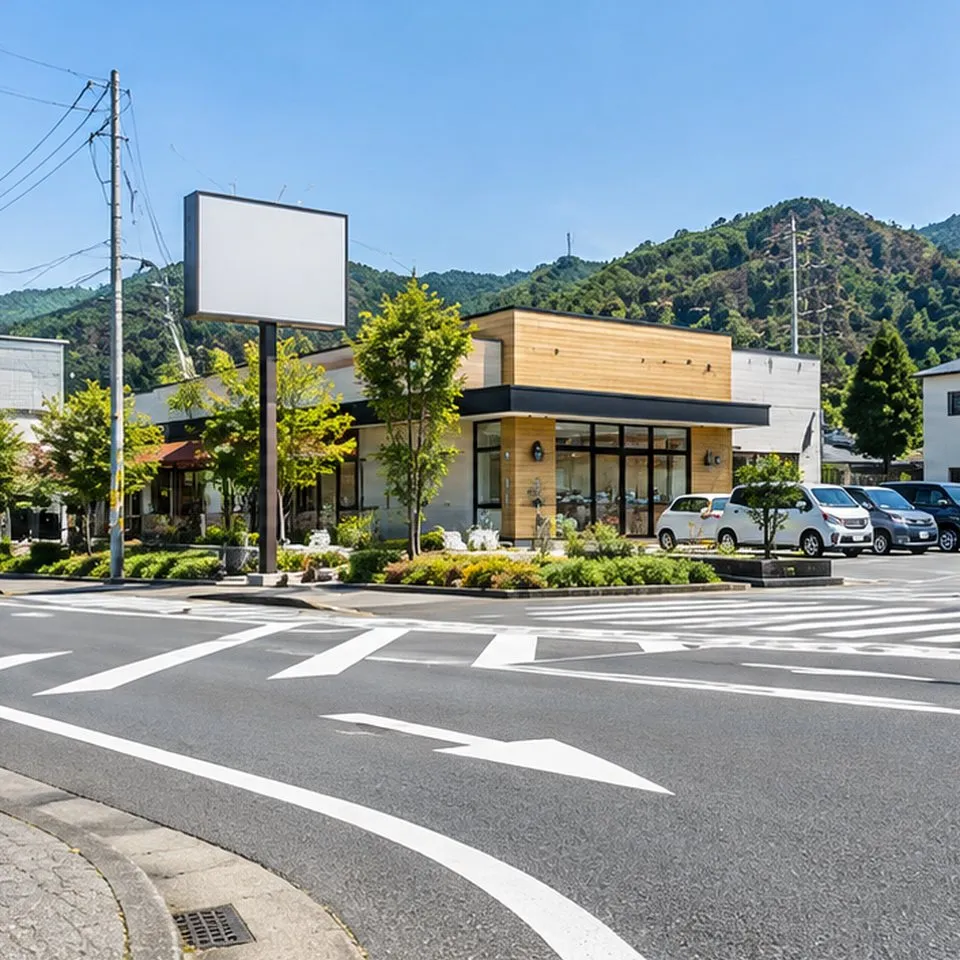
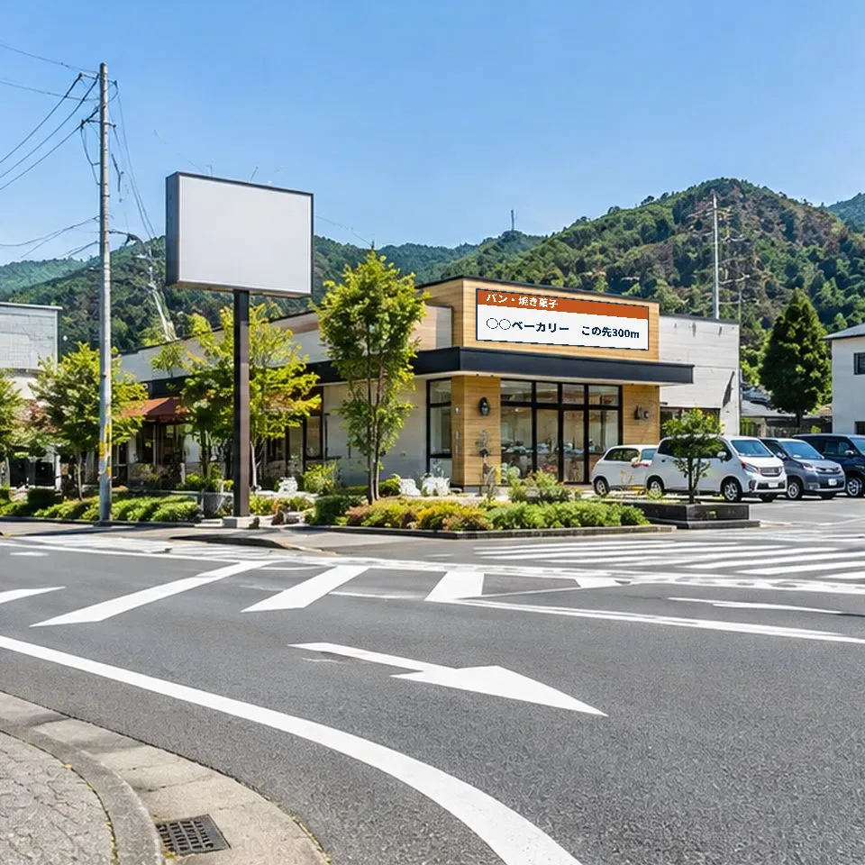

建物・土地をお持ちの方へ
その壁、
広告に使えるか無料で確認します。
場所と写真を送るだけ。
壁でも、空き地でも。
※許可が下りるか、広告主が見つかるかを保証するものではありません。
 イメージ写真（実在の物件ではありません）
イメージ写真（実在の物件ではありません）写真でわかる
空いている壁や土地が、
広告スペースになるまで。

今
広告が入ったあと今 広告が入ったあと
広告が入ったあと写真はすべてイメージです（実在の物件・広告主ではありません）。
こんな場所が候補になります
毎日たくさんの車や人が
前を通る場所。
道路に面した建物の壁
信号待ちの車から見える壁
道路沿いの空き地・駐車場の一角
使う予定のない土地をそのまま
空いたままの看板
中身が空いたままの看板
壁面を貸す前に｜収益の目安
その壁面、年間いくらの
収入になる可能性がある？
壁面所有者が受け取る使用料を試算します。月額使用料と稼働率はすべて仮定値で、実勢価格や収入を保証しません。
税・維持費は含みません。設置できるかは条例などの確認が必要です。
30秒の簡易チェック
その場所、広告に向いていそうですか？
当てはまるものをタップ。
※確認する順番の目安です。許可や広告主を判定するものではありません。
無料で確認すること
使えるかどうかは、
この4つで決まります。
道路からの見え方と交通量
どこから、何台に見えるか
屋外広告物の許可
条例で出せる場所・大きさ
景観と地域の決まり
景観規制の強い地域か
建物の強度と契約の条件
強度と、撤去費用の負担
賃料は看板会社とのご相談で決まります（当社から額は約束しません）。
進め方
お問い合わせから、
掲出までの流れ
所在地を送る
写真もあれば添えて
当社が確認（無料）
見え方・規制・広告主の見込み
見通しと見積り
看板会社が条件と費用を確認
許可・条件を確認して契約
許可がとれてから契約・設置
見込みのない場所で、手間や費用はかけません。
役割分担
それぞれの専門が、
それぞれの仕事を担います。
場所を貸す
承諾して契約
見つける・調整する
確認・広告主探し（無料）
申請書類をつくる
許可の書類
設計・施工・点検
登録業者が安全に
許可の手続きのサポート
申請はご本人。
その手前を、当社が支えます。
書類づくりの前後を、無料でお手伝いします。
当社がお手伝いすること
- 条例と窓口のご案内
- 必要書類の一覧
- 写真・寸法の材料集め
- 事前相談の日程調整・同行
- 関係者の進み具合の管理
当社が行わないこと
- 申請書の作成・代筆
- 図面の作成
- 提出の代行
必要なら行政書士などをご紹介します。
私たちの想い
使われていない壁を、まちの力に。
口コミは、来てくれた人にしか書けない。
始めたばかりのお店に必要なのは、まず知ってもらうこと。
所有者には収入を。お店にはきっかけを。まちには、続くお店を。
BRIDGE CYCLE株式会社 代表取締役 中村 裕二
よくあるご質問
ご相談の前に
相談や確認に費用はかかりますか？
かかりません。当社の報酬は、成約時に看板会社から受け取る紹介料だけです。
許可の申請はだれがしますか？
申請者ご本人か行政書士などです。当社は書類の作成・代理はしません。
建物を借りている場合でも相談できますか？
ご相談はできます。ただし、壁面や土地を広告に使うには建物・土地の所有者の同意が必要です。
屋上でもよいですか？
屋上の広告物は、多くの地域で厳しく規制されています。京都市では認められていません。滋賀県内は場所ごとに確認します。
契約は誰と結びますか？
所有者と看板会社（または広告主）が直接結びます。
途中でやめたくなったら？
解約と撤去費用の負担を、契約前に書面で決めます。
建物・土地をお持ちの方｜無料確認
その場所が
広告スペースに
なるか、確認します。
所在地だけでOK。写真があると早くなります。